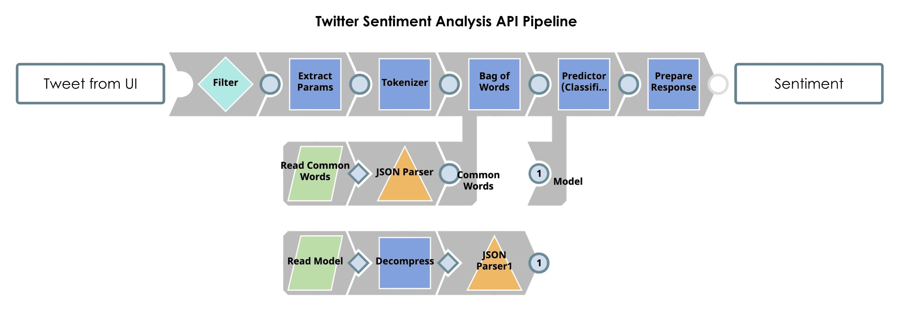
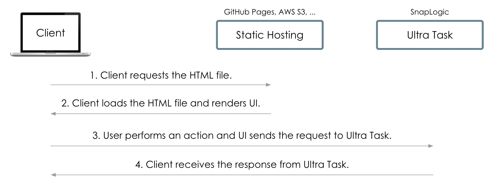
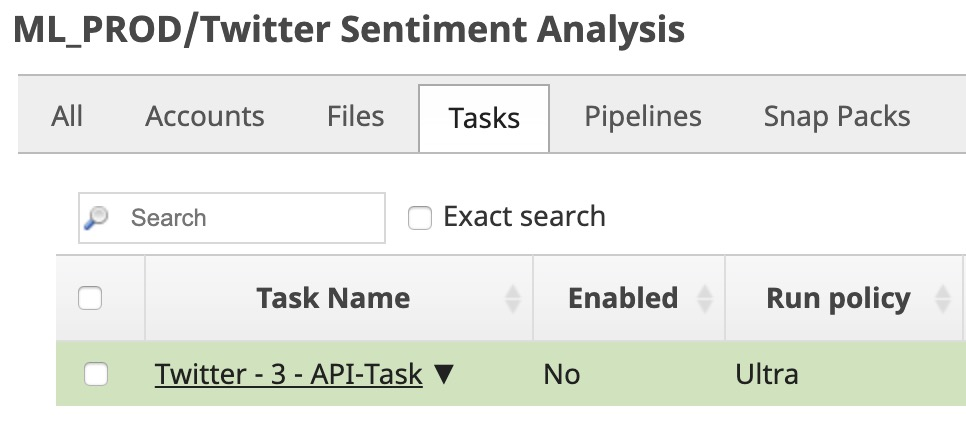
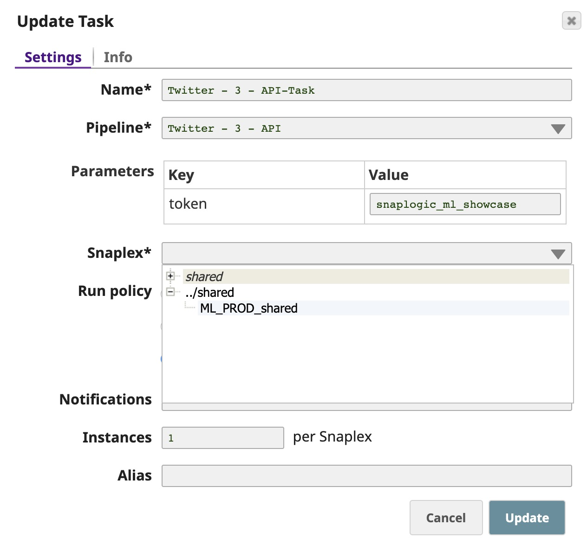
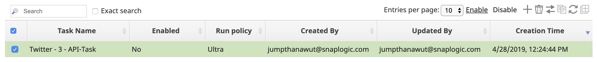
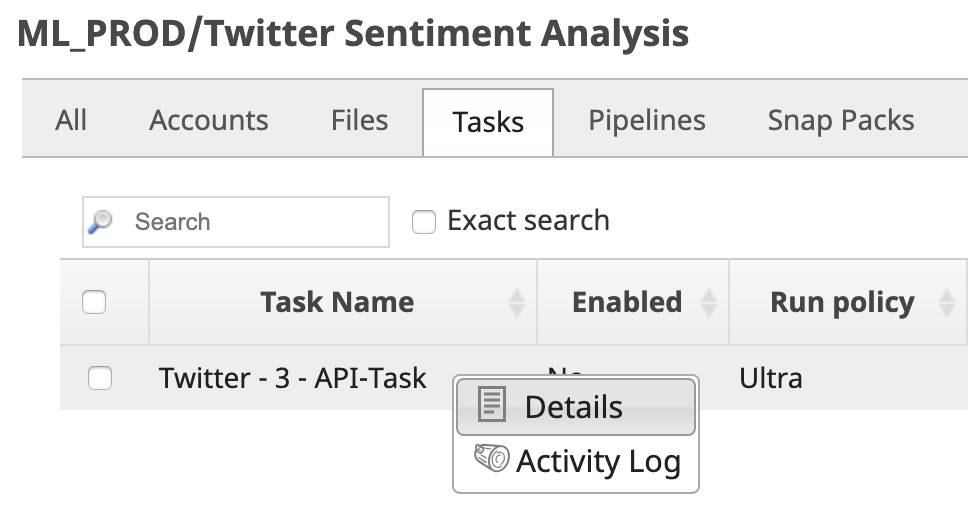
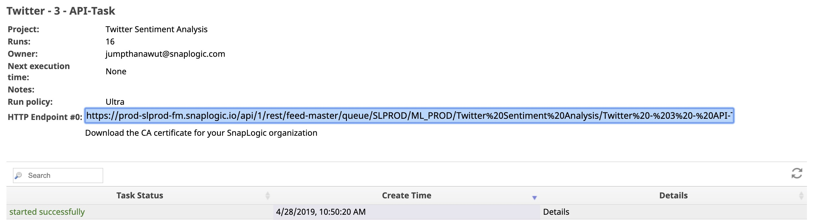
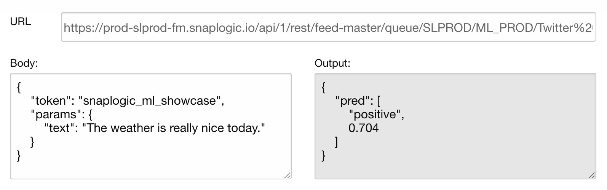

Building Real-Time Web Applications
Introduction - Twitter Sentiment Analysis
This article shows how to use SnapLogic Ultra Tasks or Triggered Tasks to build real-time web applications, using Tweet sentiment analysis as an example to demonstrate how to measure, analyze, and visualize user sentiment.
SnapLogic Pipelines can be deployed as an Ultra Task or a Triggered Task to provide REST APIs that can power your web/mobile applications using a serverless architecture. Ultra Task provides low-latency by preloading the pipeline in memory. Triggered Task has relatively higher latency since the pipeline loads, executes, or stops for each request (API call), which is ideal for batch processing. For Machine Learning APIs that help build web applications such as Twitter Sentiment Analysis, Ultra Task is preferable to provide a seamless user experience. The following examples use Ultra Task to power web applications:
- Twitter Sentiment Analysis: Analyzes polarity of a Tweet.
- Twitter Sentiment Visualizer: Integrates a Twitter API to fetch new Tweets, perform sentiment analysis, and display the result visually.
The following image displays the SnapLogic Pipeline created for the above Twitter web applications:

The following image explains the architecture workflow of the above Twitter applications:

- Client requests the HTML file. When a user clicks on the web application, the request for the HTML file is sent to the AWS S3 bucket. The HTML file contains the UI layout, components, and JavaScript that performs an action and sends the request to the API.
- Client loads the HTML file and renders UI. Client receives the HTML file from AWS S3 and renders the web application containing an input box for the user to add in a Tweet and output box for displaying the response from the sentiment analysis API.
- User performs an action and UI sends the request to Ultra Task. The user adds the Tweet in the input box and clicks Submit. Then, the request for sentiment analysis is sent to an API (Ultra Task). This request is passed to the Pipeline's input view that uses a pre-loaded sentiment analysis model. The Pipeline outputs the sentiment of the input Tweet.
- Client receives the response from Ultra Task. The sentiment of a Tweet is sent back from Ultra Task and displays in the UI.
SnapLogic Ultra Task provides high reliability and scalability. Ultra Task runs on a Snaplex comprising a cluster of nodes, which can be on-premise or in the cloud; however, we recommend a hybrid approach with 50% of nodes each in the cloud and on-premise. You can specify a number of Pipeline instances to run concurrently. So, unless all nodes go down at the same time, your API will be alive. You can scale the Snaplex horizontally by adding nodes or vertically by using nodes with higher specifications.
Prerequisites
- Frontend Development Environment
- You can download the HTML file of Twitter Sentiment Analysis from GitHub. You need a text editor to edit the HTML file.
- Ultra Task
-
An Ultra Task in SnapLogic is required to provide an API to your web/mobile application. If you do not already have an Ultra Task, perform the following steps to create one:
- Download the Twitter Sentiment Analysis.zip file. This file is an export of a project containing the required Pipelines, tasks, and files.
- Import the project. In SnapLogic Manager, select the project space and click Import. For more information, see Importing and Exporting Projects.
- Go to your project, click Tasks, and click the task entity
to open the Update Task dialog.

- Select the Snaplex from the dropdown list to deploy this Ultra Task on. Click
Update.

- Select the task check box and click Enable in the top
right.

- Click the small triangle next to the task name and click
Details to open the Task details pane.

- Copy the HTTP Endpoint and save it on your local machine to add it later to your
HTML file. Ultra Task can take up to 5 minutes to start. You can click
Details to view the task status.

Build Application
Follow the steps below to build your application. You should have the Twitter Sentiment Analysis HTML file and the Ultra Task endpoint before performing these steps.
- Test the API (Ultra Task) to ensure it is working as expected.
- Modify the HTML file to use your Ultra Task and test it locally.
- Deploy your web application.
Steps
Steps
-
Test the API (Ultra Task).
Open the SnapLogic ML API Tester, add your URL and the Body (or use the URL and Body below), and click SUBMIT.
 Note: The URL and token below are examples. Replace them with your own Ultra Task endpoint and token.
Note: The URL and token below are examples. Replace them with your own Ultra Task endpoint and token.URL:
https://<your-env>-fm.snaplogic.io/api/1/rest/feed-master/queue/<your-org>/<project>/Twitter%20Sentiment%20Analysis/TwitterBody:
{ "token": "snaplogic_ml_showcase", "params": { "text": "The weather is really nice today." } }
The sentiment (response from the Ultra Task) displays in a JSON format in the Output section. Thus, the sentiment analysis model gives a positive sentiment of 0.704 (70.4% positive) for "The weather is really nice today" Tweet.